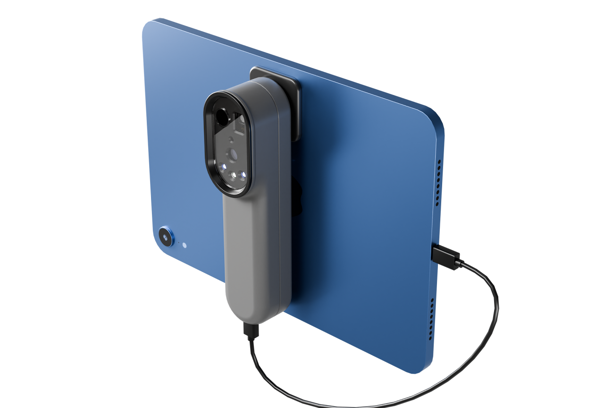
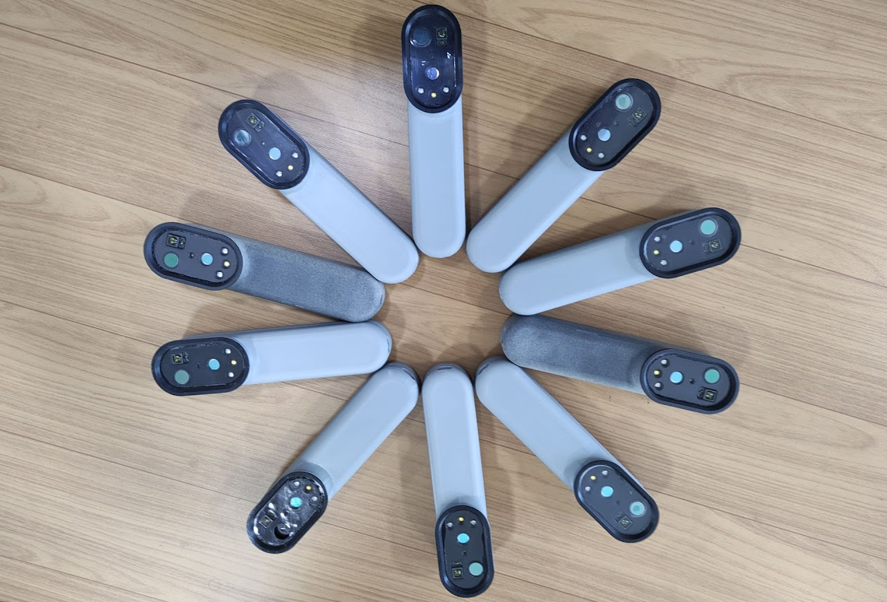
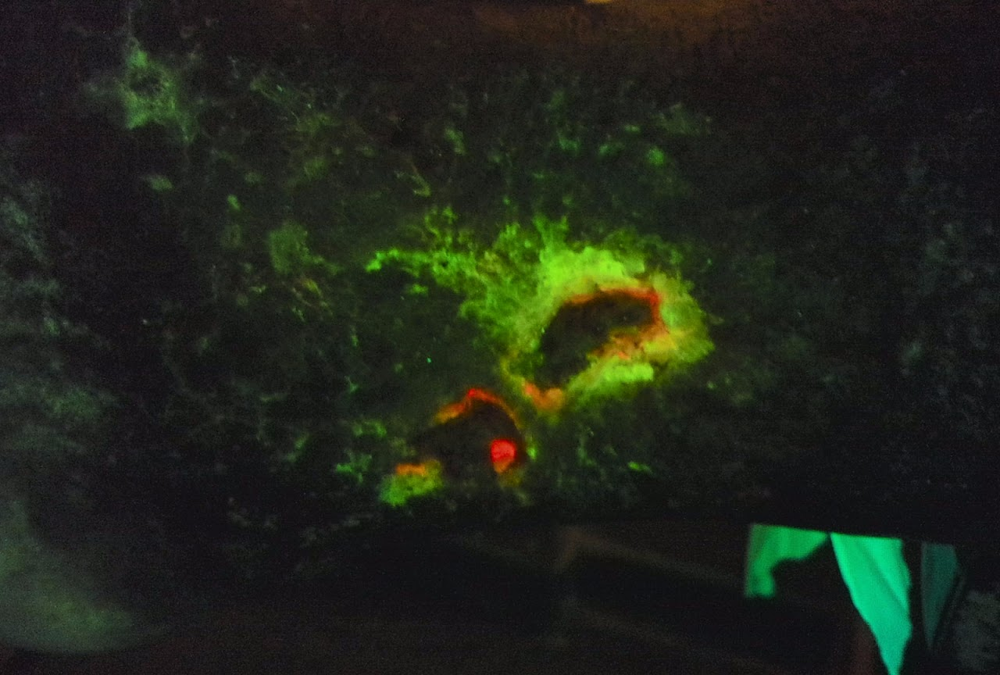

Basic Characteristics
Developed as a spinoff of the Chronic Wound Care Therapy device, this system enhances physicians' ability to diagnose chronic wounds and identify key factors preventing closure.
Featuring specialized cameras, LEDs, and optical filters, it laid the foundation for a larger system integrating AI and multispectral imaging to assess wound status, predict outcomes, and guide treatment decisions.
Due to strict IP protection, limited details can be shared.

System Characteristics
- Compliant with IEC 60601-1, 60601-1-2, 62471, 62304, 60601-2-57, FDA software guidelines for medical devices, and ISO 13485.
- Firmware designed with a hard real-time premise.
- Battery powered.
- Integration of multiple cameras, PCBs, control devices, and complex sensors.
- AI-driven analysis such as wound segmentation and characterization.

Areas that I had specifically worked on or led
- Guided the development of complex imaging fusion algorithms that extract parameters such as StO2 (sometimes referred to as Tissue Oximetry or Near Infrared Spectroscopy).
- Developed the electronic hardware and firmware.
- Developed hardware, embedded firmware, and test/validation procedures using C, Python, and MATLAB.
- Guided the team in implementing critical features and ensuring project alignment.
- Created regulatory documentation for compliance in the USA, Europe, and Brazil.
- Development of calibration procedures and algorithms